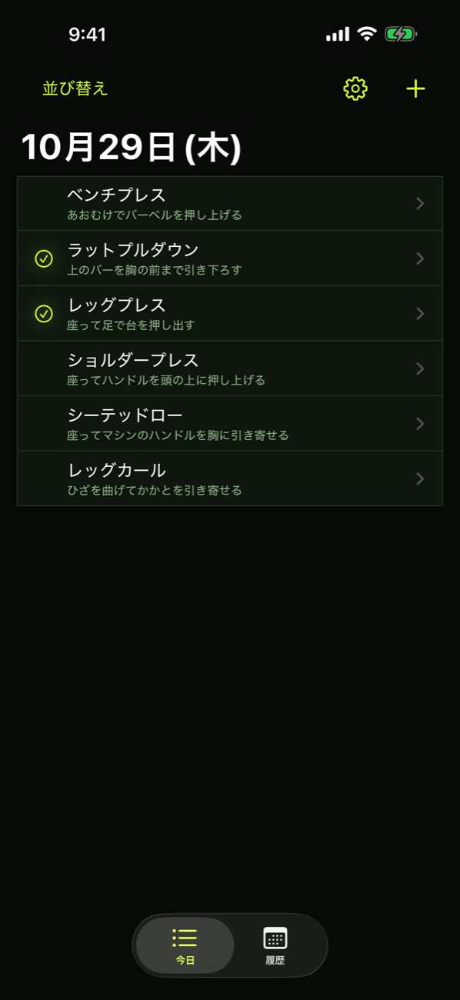
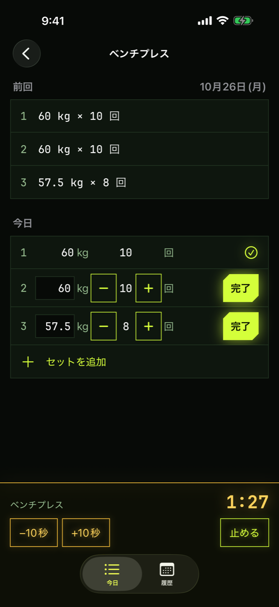
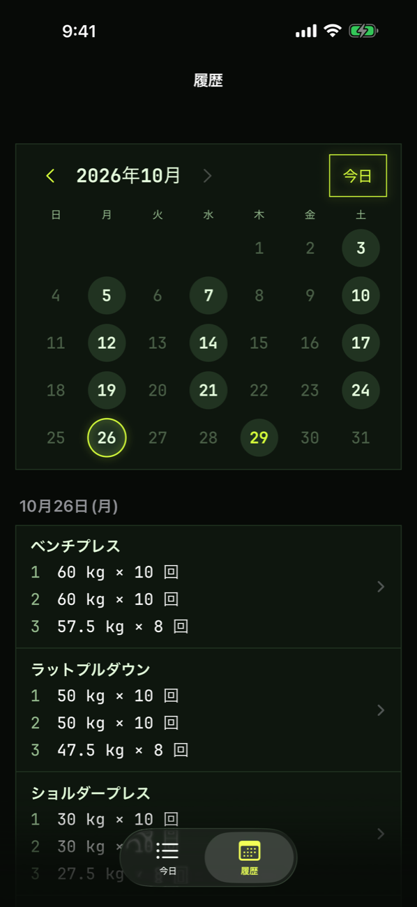

01
押すだけで記録
種目を開くと、前回の重量と回数が入った状態から始まります。同じなら「完了」を押すだけ。変えるときも数字を直すだけです。
回数は「＋」「−」でも変えられるので、キーボードを開かなくても大丈夫です。
02
いつもの種目から選ぶだけ
自分がいつもやる種目を並べておき、その日にやるものを選んで記録します。決まった順番はないので、そのとき空いているマシンから始めることもできます。
種目は 40 以上の候補から追加でき、名前を入力して追加することもできます。今日記録した種目はひと目で分かります。

03
休憩タイマーは自動でスタート
セットを完了すると、休憩タイマーが自動で始まります。残り時間はロック画面とダイナミックアイランドにも出て、10 秒の延長・短縮や停止もそこからできます。
休憩が終わると通知でお知らせします。休憩時間は設定で変えられます。

04
カレンダーで振り返り
トレーニングした日がカレンダーで分かります。日付を選ぶと、その日の種目とセットを確認できます。
記録し忘れたセットや種目をあとから足したり、間違えた数字を直したりもできます。

こんな方におすすめ
- ジムでの筋トレを、もっと手軽に記録したい方
- 前回の重量と回数を、思い出したりメモを見返したりしたくない方
- 多機能なアプリより、必要な機能だけのシンプルなアプリがいい方
- アカウント登録なしで、すぐに使い始めたい方
記録は iPhone の中だけ
アカウント登録は不要です。記録は iPhone の中だけに保存され、外部に送信されることはありません。